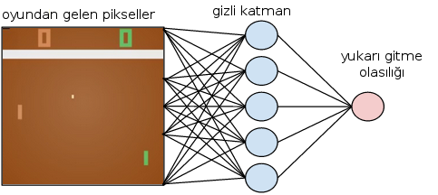

Derin Takviyeli Öğrenme, İlke Gradyanları (Deep Reinforcement Learning, Policy Gradients )
Bilgisayar otomatik olarak oyun oynamayı öğrenebilir mi? Diyelim herhangi bir bilgisayar oyunu, dama, satranç, ya da eğlence oyunlarından Pong. Eğer elimizde bir simülasyon ortamı var ise, ve takviyeli öğrenme teknikleri ile bu sorunun cevabı evet. Simülasyon ortamında bilgisayara karşı istediğimiz kadar oynayıp RL teknikleri bir oyunu oynamayı öğrenebilir.
Daha önce [7] yazısında farklı bir yaklaşım gördük, bir değer fonksiyonu vardı, bu fonksiyona tahtanın son halini veriyorduk, değer fonksiyonu bize pozisyonun taraflar için ne kadar avantajlı olduğunu raporluyordu (tek bir sayı). Bu fonksiyon bir kez, ve önceden kodlanmaktaydı, ve oyun oynayan yapay zeka altüst (minimax) algoritması ile kendisi için en avantajlı karşı taraf için en avantajsız pozisyonları bu fonksiyon ile değerlendirerek ve arama yaparak buluyordu. Fakat değer fonksiyonu yaklaşımının bazı dezavantajları var, birincisi fonksiyonun deterministik olması. Oyun sırasında değişmiyor, önceden kodlanmış.
Daha iyi bir yaklaşım olasılıksal bir ilke $\pi_\theta(a,s)$ kodlamak, atılan adımları örnekleme ile atmak, ve ilkeyi her oyun sonunda güncellemek. Böylece oyun sırasında hem oyuncu yeni şeyler denemeye (açık fikirli!) hazır oluyor, takılıp kalmıyor, oyun durumundan tam emin olunamadığı durumlar icin bile hazır oluyor, ve kazandıran ilkeler daha yoğun olasılıklara tekabül ettiği için yine iyi bir oyun oynama becerisine kavuşuyor, ve kendini sürekli güncelliyor.
İlke $\pi\theta(a,s)$, oyun konumu (state) $s$ ile, yapılacak hareket (action) ise $a$ ile belirtilir. Pong örneğinde konum tüm oyunun o andaki piksel görüntüsü olarak bize bildiriliyor olabilir, hareket ise raketin yukarı mı aşağı mı gideceği; verili konum $s$ için $\pi\theta(a|s)$ (kazanmak için optimallik bağlamında) mümkün tüm davranışların dağılımını verecek.
Peki ilke fonksiyonunu nasıl güncelleriz? İlke gradyanı (policy gradient) kavramı ile. İlke bir fonksiyondur, bir softmax fonksiyonu ile ya da yapay sinir ağı ile temsil edilebilir. YSA'lar her türlü fonksiyonu temsil edebildikleri için sofistike kabiliyetleri için daha tercih ediliyorlar (daha önemlisi gradyanları otomatik alınabiliyor, bunun niye faydalı olduğunu birazdan göreceğiz).

Güncelleme nasıl olacak? Burada skor fonksiyonunu kavramı gerekli, optimize etmek istediğimiz bir skor fonksiyonunun beklentisinin optimize edilmesi, skor fonksiyonu tabii ki ilke fonksiyonuna bağlıdır, yani skor beklentisi en iyi olacak ilkeyi arıyoruz. Bu beklentinin gradyanını istiyoruz, çünkü ilkeyi tanımlayan $\theta$'yi skor bağlamında öyle güncelleyeceğiz ki eğer aynı konumu tekrar gelmiş olsak, daha iyi hareketlerle daha iyi skora erişelim. Aradığımız gradyan ($s,a$ yerine kısaca $x$ kullanalım, skor $Q$ olsun [2]),
$$ \nabla\theta E{x \sim \pi_\theta(x)} [Q(x)] $$
Üstteki ifadeyi açalım, beklentinin tanımı üzerinden,
$$ \nabla\theta E{x \sim \pi\theta(s)} [Q(x)] = \nabla\theta \sum_x \pi(x) Q(x) $$
Gradyan içeri nüfuz edebilir,
$$ = \sumx \nabla\theta \pi_\theta(x) Q(x) $$
$\pi(x)$ ile çarpıp bölersek hiç bir şey değişmemiş olur,
$$ = \sumx \pi(x) \frac{\nabla\theta \pi(x)}{\pi(x)} Q(x) $$
Cebirsel olarak biliyoruz ki $\nabla\theta \log(z) = \frac{1}{z}\nabla\theta$, o zaman,
$$ = \sumx \pi(x) \nabla\theta \log \pi(x)Q(x) $$
Yine beklenti tanımından hareketle
$$ = Ex \big[ \nabla\theta \log \pi(x) Q(x) \big] $$
$x = (s,a)$ demistik, o zaman nihai denklem
$$ \nabla\theta E{x \sim \pi\theta(s,a)} [Q(s,a)] = E{s,a} \big[ \nabla\theta \log \pi\theta(s,a) Q(s,a) \big] $$
Eşitliğin sağ tarafı bize güzel bir kabiliyet sunmuş oldu, orada bir beklenti var, bu hesabı analitik olarak yapmak çok zor olabilir, fakat beklentilerin örneklem alarak nasıl hesaplanacağını biliyoruz! Detaylar için İstatistik, Monte Carlo, Entegraller, MCMC yazısı. O zaman $v_t \sim Q(s,a)$ örneklemi alırız, yani oyunu baştan sonra kadar oynarız ve skora bakarız, ve $\theta$ güncellemesi için [5],
$$ \Delta \thetat = \alpha \nabla\theta \log \pi\theta (st,at) vt$$
Oyun oynamak ile örneklemin alakası ne? Oynanan bir oyun mümkün tüm oyunlar içinden alınan bir örneklem değil midir? Evet. Ayrıca DYSA durumunda da olası her aksiyonun olasılığını hesaplıyoruz ve bu olasıklar üzerinden zar atarak bir hareket seçiyoruz. Daha olası olan daha fazla seçiliyor tabii ama az olası olan da bazen seçilebiliyor.
Tabii mesela Pong oyunu bir sürü adım $a1,..,an$ sonrası bitiyor, bu durumda en sondaki kazanç (ya da kaybı) o oyundaki tüm adımlara geriye giderek uyguluyoruz. Güncelleme sonrası ilke fonksiyonumuz değişiyor, ve bir oyun daha oynayarak aynı şeyi tekrarlıyoruz.
$\pi\theta (s,a)$'nin ilke fonksiyonu olduğunu söyledik, bu fonksiyon DYSA olabilir, ya da daha basit, sonlu sayıda seçenek üzerinden ayrıksal olasılıkları depolayan softmax olabilir (bu durum için gradyan türetmesi altta). DYSA durumunda üstteki formüle göre $\log \pi\theta (s,a)$'un gradyanının gerektiğini görüyoruz, otomatik türev uzerinden bu gradyan DYSA paketinden rahatça alınabilir.
Pong oyunu kodunu göreceğiz, ama ondan önce daha basit çubuk dengeleme problemine bakalım [1], kuruluş, oyun açıklaması için [3]. Bir simulasyon ortamındayız, ve bu ortamda bize bir çubuk veriliyor, ve çubuğun konumu dört tane sayı üzerinden bildirilir, ödül her adımda anında alınır (çubuk düşmediyse, ekrandan çıkmadıysa o anda başarı).
# cartpole_train.py - egitim
import tensorflow as tf, gym
import numpy as np
def reset_graph(seed=42):
tf.reset_default_graph()
tf.set_random_seed(seed)
np.random.seed(seed)
def discount_rewards(rewards, discount_rate):
discounted_rewards = np.zeros(len(rewards))
cumulative_rewards = 0
for step in reversed(range(len(rewards))):
cumulative_rewards = rewards[step] + cumulative_rewards * discount_rate
discounted_rewards[step] = cumulative_rewards
return discounted_rewards
def discount_and_normalize_rewards(all_rewards, discount_rate):
all_discounted_rewards = [discount_rewards(rewards, discount_rate) \
for rewards in all_rewards]
flat_rewards = np.concatenate(all_discounted_rewards)
reward_mean = flat_rewards.mean()
reward_std = flat_rewards.std()
return [(discounted_rewards - reward_mean)/reward_std for \
discounted_rewards in all_discounted_rewards]
import tensorflow as tf
reset_graph()
n_inputs = 4
n_hidden = 4
n_outputs = 1
learning_rate = 0.01
initializer = tf.contrib.layers.variance_scaling_initializer()
X = tf.placeholder(tf.float32, shape=[None, n_inputs])
hidden = tf.layers.dense(X, n_hidden,
activation=tf.nn.elu,
kernel_initializer=initializer)
logits = tf.layers.dense(hidden, n_outputs)
outputs = tf.nn.sigmoid(logits)
p_left_and_right = tf.concat(axis=1, values=[outputs, 1 - outputs])
action = tf.multinomial(tf.log(p_left_and_right), num_samples=1)
y = 1. - tf.to_float(action)
cross_entropy = tf.nn.sigmoid_cross_entropy_with_logits(labels=y, logits=logits)
optimizer = tf.train.AdamOptimizer(learning_rate)
grads_and_vars = optimizer.compute_gradients(cross_entropy)
gradients = [grad for grad, variable in grads_and_vars]
gradient_placeholders = []
grads_and_vars_feed = []
for grad, variable in grads_and_vars:
gradient_placeholder = tf.placeholder(tf.float32, shape=grad.get_shape())
gradient_placeholders.append(gradient_placeholder)
grads_and_vars_feed.append((gradient_placeholder, variable))
training_op = optimizer.apply_gradients(grads_and_vars_feed)
init = tf.global_variables_initializer()
saver = tf.train.Saver()
env = gym.make("CartPole-v0")
n_games_per_update = 10
n_max_steps = 1000
n_iterations = 250
save_iterations = 10
discount_rate = 0.95
ffile = "/tmp/cartpole.ckpt"
sess = tf.Session()
sess.run(init)
for iteration in range(n_iterations):
print("\rIteration: {}".format(iteration))
all_rewards = []
all_gradients = []
for game in range(n_games_per_update):
current_rewards = []
current_gradients = []
obs = env.reset()
for step in range(n_max_steps):
d = {X: obs.reshape(1, n_inputs)}
action_val, gradients_val = sess.run([action, gradients], feed_dict=d)
obs, reward, done, info = env.step(action_val[0][0])
current_rewards.append(reward)
current_gradients.append(gradients_val)
if done: break
all_rewards.append(current_rewards)
all_gradients.append(current_gradients)
all_rewards = discount_and_normalize_rewards(all_rewards,
discount_rate=discount_rate)
feed_dict = {}
for var_index, gradient_placeholder in enumerate(gradient_placeholders):
tmp = [reward * all_gradients[game_index][step][var_index] \
for game_index, rewards in enumerate(all_rewards) \
for step, reward in enumerate(rewards)]
mean_gradients = np.mean(tmp, axis=0)
feed_dict[gradient_placeholder] = mean_gradients
sess.run(training_op, feed_dict=feed_dict)
if iteration % save_iterations == 0:
saver.save(sess, ffile)
Eğitim fazla sürmüyor. Bittikten sonra alttaki kodla sonucu görebiliriz. Çubuğun dengeli bir şekilde tutulabildiğini göreceğiz.
# cartpole_play.py - oyunu oyna
import tensorflow as tf
import matplotlib.animation as animation
import gym
import pandas as pd
import numpy as np
import matplotlib.pyplot as plt
def reset_graph(seed=42):
tf.reset_default_graph()
tf.set_random_seed(seed)
np.random.seed(seed)
def render_cart_pole(env, obs):
return env.render(mode="rgb_array")
def update_scene(num, frames, patch):
patch.set_data(frames[num])
return patch,
def render_policy_net(model_path, action, X, n_max_steps = 1000):
frames = []
env = gym.make("CartPole-v0")
obs = env.reset()
with tf.Session() as sess:
saver.restore(sess, model_path)
for step in range(n_max_steps):
img = render_cart_pole(env, obs)
frames.append(img)
action_val = action.eval(feed_dict={X: obs.reshape(1, n_inputs)})
obs, reward, done, info = env.step(action_val[0][0])
if done:
break
env.close()
return frames
import tensorflow as tf
reset_graph()
n_inputs = 4
n_hidden = 4
n_outputs = 1
learning_rate = 0.01
initializer = tf.contrib.layers.variance_scaling_initializer()
X = tf.placeholder(tf.float32, shape=[None, n_inputs])
hidden = tf.layers.dense(X, n_hidden,
activation=tf.nn.elu,
kernel_initializer=initializer)
logits = tf.layers.dense(hidden, n_outputs)
outputs = tf.nn.sigmoid(logits) # probability of action 0 (left)
p_left_and_right = tf.concat(axis=1, values=[outputs, 1 - outputs])
action = tf.multinomial(tf.log(p_left_and_right), num_samples=1)
y = 1. - tf.to_float(action)
cross_entropy = tf.nn.sigmoid_cross_entropy_with_logits(labels=y, logits=logits)
optimizer = tf.train.AdamOptimizer(learning_rate)
grads_and_vars = optimizer.compute_gradients(cross_entropy)
gradients = [grad for grad, variable in grads_and_vars]
gradient_placeholders = []
grads_and_vars_feed = []
for grad, variable in grads_and_vars:
gradient_placeholder = tf.placeholder(tf.float32, shape=grad.get_shape())
gradient_placeholders.append(gradient_placeholder)
grads_and_vars_feed.append((gradient_placeholder, variable))
training_op = optimizer.apply_gradients(grads_and_vars_feed)
init = tf.global_variables_initializer()
saver = tf.train.Saver()
env = gym.make("CartPole-v0")
n_games_per_update = 10
n_max_steps = 1000
n_iterations = 250
save_iterations = 10
discount_rate = 0.95
ffile = "/tmp/cartpole.ckpt"
frames = render_policy_net(ffile, action, X, n_max_steps=500)
Pong oyunu kodu alttadır [6]. Bu eğitim paralellik özelliği olmayan normal
bilgisayarda uzun sürüyor (ben birkaç gün eğittim), fakat TensorFlow
çizitini arada sırada kaydedip kaldığı yerden devam edebildiği için parça
parça işletilebilir. Oyunun otomatik nasıl oynandığını görmek için alttaki
env.render satırını aktive etmek yeterli. Bilgisayarın kendi başına
öğrenip oynaması müthiş!
# pong.py
import numpy as np
import gym
import tensorflow as tf
n_obs = 80 * 80
h = 200
n_actions = 3
learning_rate = 1e-3
gamma = .99
decay = 0.99
save_path='/home/burak/Downloads/scikit-data/models/pong/pong.ckpt'
env = gym.make("Pong-v0")
observation = env.reset()
prev_x = None
xs,rs,ys = [],[],[]
running_reward = None
reward_sum = 0
episode_number = 0
tf_model = {}
with tf.variable_scope('layer_one',reuse=False):
xavier_l1 = tf.truncated_normal_initializer(mean=0,
stddev=1./np.sqrt(n_obs),
dtype=tf.float32)
tf_model['W1'] = tf.get_variable("W1", [n_obs, h], initializer=xavier_l1)
with tf.variable_scope('layer_two',reuse=False):
xavier_l2 = tf.truncated_normal_initializer(mean=0,
stddev=1./np.sqrt(h),
dtype=tf.float32)
tf_model['W2'] = tf.get_variable("W2", [h,n_actions], initializer=xavier_l2)
def tf_discount_rewards(tf_r):
discount_f = lambda a, v: a*gamma + v;
tf_r_reverse = tf.scan(discount_f, tf.reverse(tf_r,[True, False]))
tf_discounted_r = tf.reverse(tf_r_reverse,[True, False])
return tf_discounted_r
def tf_policy_forward(x): #x ~ [1,D]
h = tf.matmul(x, tf_model['W1'])
h = tf.nn.relu(h)
logp = tf.matmul(h, tf_model['W2'])
p = tf.nn.softmax(logp)
return p
def prepro(I):
I = I[35:195]
I = I[::2,::2,0]
I[I == 144] = 0
I[I == 109] = 0
I[I != 0] = 1
return I.astype(np.float).ravel()
tf_x = tf.placeholder(dtype=tf.float32, shape=[None, n_obs],name="tf_x")
tf_y = tf.placeholder(dtype=tf.float32, shape=[None, n_actions],name="tf_y")
tf_epr = tf.placeholder(dtype=tf.float32, shape=[None,1], name="tf_epr")
tf_discounted_epr = tf_discount_rewards(tf_epr)
tf_mean, tf_variance= tf.nn.moments(tf_discounted_epr, [0],
shift=None, name="reward_moments")
tf_discounted_epr -= tf_mean
tf_discounted_epr /= tf.sqrt(tf_variance + 1e-6)
tf_aprob = tf_policy_forward(tf_x)
loss = tf.nn.l2_loss(tf_y-tf_aprob)
optimizer = tf.train.RMSPropOptimizer(learning_rate, decay=decay)
tf_grads = optimizer.compute_gradients(loss,
var_list=tf.trainable_variables(),
grad_loss=tf_discounted_epr)
train_op = optimizer.apply_gradients(tf_grads)
sess = tf.InteractiveSession()
tf.initialize_all_variables().run()
saver = tf.train.Saver(tf.all_variables())
load_was_success = True
try:
# mevcut TF ciziti varsa yuklemeye ugras, kaldigi yerden devam icin
save_dir = '/'.join(save_path.split('/')[:-1])
ckpt = tf.train.get_checkpoint_state(save_dir)
load_path = ckpt.model_checkpoint_path
saver.restore(sess, load_path)
except:
print "no saved model to load. starting new session"
load_was_success = False
else:
print "loaded model: {}".format(load_path)
saver = tf.train.Saver(tf.all_variables())
episode_number = int(load_path.split('-')[-1])
while True:
# oyunu seyretmek icin bir sure egitildikten sonra
# alttaki satiri aktif hale getirebiliriz
# env.render()
cur_x = prepro(observation)
x = cur_x - prev_x if prev_x is not None else np.zeros(n_obs)
prev_x = cur_x
feed = {tf_x: np.reshape(x, (1,-1))}
aprob = sess.run(tf_aprob,feed) ; aprob = aprob[0,:]
action = np.random.choice(n_actions, p=aprob)
label = np.zeros_like(aprob) ; label[action] = 1
observation, reward, done, info = env.step(action+1)
reward_sum += reward
xs.append(x) ; ys.append(label) ; rs.append(reward)
if done:
running_reward = reward_sum if running_reward \
is None else running_reward * 0.99 + reward_sum * 0.01
feed = {tf_x: np.vstack(xs), tf_epr: np.vstack(rs), tf_y: np.vstack(ys)}
_ = sess.run(train_op,feed)
if episode_number % 10 == 0:
print 'ep {}: reward: {}, mean reward: {:3f}'.\
format(episode_number, reward_sum, running_reward)
else:
print '\tep {}: reward: {}'.format(episode_number, reward_sum)
xs,rs,ys = [],[],[]
episode_number += 1
observation = env.reset()
reward_sum = 0
if episode_number % 50 == 0:
saver.save(sess, save_path, global_step=episode_number)
print "SAVED MODEL #{}".format(episode_number)
Softmax
Softmax sonlu sayıda seçenek üzerinden bir dağılım tanımlar,
$$ \pi\theta(s,a) = \frac{e^{h(s,a,\theta)}}{\sumb e^{h(s,b,\theta)} } $$
ki $h(s,a,\theta) = \phi(s,a)^T\theta$. Şimdi ilke gradyanını softmax ile nasıl işletiriz onu görelim. Softmax'in kodlaması için bir çözüm ayrıksal olarak (bir matriste mesela) her $s,a$ kombinasyonu için gerekli ağırlıkları tutmak. O zaman spesifik bir $\phi$ çağrısı sonrası $\theta$ ile bu katsayılar çarpılır ve sonuç alınır. $\theta$ ilkenin ne olduğunu, onun özünü tanımlar. DYSA durumundan bir fark softmax için otomatik türeve gerek olmadan direk türevi kendimiz hesaplayabiliriz [4]. Üstteki formülün log gradyanı
$$ \nabla\theta \log \pi\theta = \nabla\theta \log \frac{e^{h(s,a,\theta)}}{\sumb e^{h(s,b,\theta)} } $$
$$ = \nabla\theta \big[ \log e^{h(s,a,\theta)} - \log \sumb e^{h(s,b,\theta)}\big]$$
çünkü
$$ \log(\frac{x}{y}) = \log x - \log y $$
Devam edelim
$$ = \nabla\theta \big[ h(s,a,\theta) - \log \sumb e^{h(s,b,\theta)} \big]$$
Gradyan her iki terime de uygulanır,
$$ = \phi(s,a) - \sumb h(s,b,\theta)\frac{e^{h(s,b,\theta)}}{\sumb e^{h(s,b,\theta)}} $$
$$ = \phi(s,a) - \sumb h(s,b,\theta) \pi\theta(b,s) $$
$$ = \phi(s,a) - E{\pi\theta} \big[ \phi(s,\cdot) \big] $$
İlginç ve ilk bakışta anlaşılabilen / akla yatacak (intuitive) bir sonuca ulaştık. Log gradyanı içinde bulunduğumuz konum ve attığımız adım için hesaplanan $\phi$'den mevcut atılabilecek tüm adımlar üzerinden hesaplanan bir $\phi$ ortalamasının çıkartılmış hali. Yani "bu spesifik $\phi$ normalden ne kadar fazla?'' sorusunu sormuş oluyorum, ve gradyanın gideceği, iyileştirme yönünü bu sayı belirliyor. Yani bir $\phi$ eğer normalden fazla ortaya çıkıyorsa ve iyi sonuç alıyorsa (skorla çarpım yaptığımızı unutmayalım), ilkeyi o yönde daha fazla güncelliyoruz ki bu başarılı sonuçları daha fazla alabilelim.
Kaynaklar
[1] Géron, Hands-On Machine Learning with Scikit-Learn and TensorFlow
[2] Karpathy, Deep Reinforcement Learning: Pong from Pixels, http://karpathy.github.io/2016/05/31/rl/
[3] Bayramlı, OpenAI Gym, Pong, Derin Takviyeli Öğrenme, https://burakbayramli.github.io/dersblog/sk/2017/09/openai-gym-pong-derin-takviyeli-ogrenme.html
[3] Bayramlı, OpenAI, Çubuklu Araba, CartPole, https://burakbayramli.github.io/dersblog/sk/2017/09/openai-cubuklu-araba-cartpole.html
[4] Silver, Monte-Carlo Simulation Balancing, http://www.machinelearning.org/archive/icml2009/papers/500.pdf
[5] Silver, Reinforcement Learning, http://www0.cs.ucl.ac.uk/staff/d.silver/web/Teaching.html
[6] Greydanus, Solves Pong with Policy Gradients in Tensorflow, https://gist.github.com/greydanus/5036f784eec2036252e1990da21eda18
[7] Bayramlı, Bilgisayar Bilim, Yapay Zeka ve Müsabaka
Yukarı